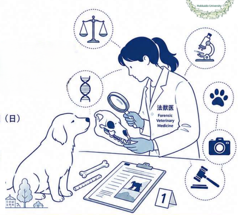
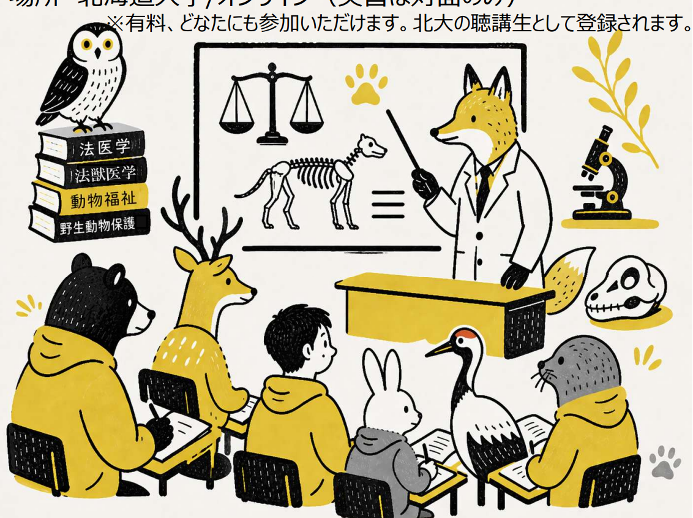

 北海道大学獣医学部 創立75周年記念事業 市民公開講座 動物の声を聞く科学 ～One Healthと法獣医学～ 開催日 2026年10月4日（日） 場所 北海道大学 獣医学部 講義棟 対象 どなたでも参加いただけます 概要 「それって動物虐待？ネグレクトって何？ ー米国発、動物の命を守る法獣医学」 獣医師（米国・日本）、シェルターメディスン、獣医法医学、西山裕子 「動物の命と社会を繋ぐ法獣医学 ー北海道大学獣医学部での新たな取り組み」 北海道大学獣医学研究院 法獣医学分野 特任助教 市川世識 「法医学の世界へようこそ ー社会を支える法医学のちから」 北海道大学医学研究院 法医学教室 講師 神繁樹 ポスターPDFを見る (PDF)
 Hokkaido Summer Institute (HSI) 2026 アニマルCSI（講義）/法獣医中毒学（実習） 開催日 2026年7月27日（月）～7月30日（木） 場所 北海道大学 獣医学部 講義棟 対象 どなたでも参加できます（北海道大学のHSIウェブサイトよりお申し込みが必要です） 概要 法獣医学分野が担当する講義および実習です。詳細情報は決定次第掲載いたします。 ポスターPDFを見る (PDF)